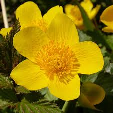

Många av aprilväxterna blommar ännu i maj, men nya arter tillkommer.
Juni är en bra växtmånad. Mängder av arter börjar sin blomning nu, och de kan blomma hela sommaren. Drygt 70% av Sveriges orkidéer blommar denna månad. Här är några exempel på juniväxter, med tonvikt på orkidéer.
Växter i maj
Många av aprilväxterna blommar ännu i maj, men nya arter tillkommer. Bland dem finns den sällsynta våradonisen, den vanliga harsyran och tusensköna, vanlig i södra och mellersta Sverige.

Vanliga majväxter
Adam och Eva
Fältsippa
Kabbleka
Växter i juni
Juni är en bra växtmånad. Mängder av arter börjar sin blomning nu, och de kan blomma hela sommaren. Drygt 70% av Sveriges orkidéer blommar denna månad, till exempel brudsporre och nattviol. Exempel på andra juniblommor är liljekonvalj, prästkrage och linnea